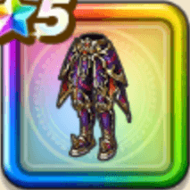

ブレアのよろい下
攻略班 8.5点 / 眠り耐性+5%呪い耐性+5%眠り耐性+5%呪い耐性+5%スキルの斬撃ダメージ+6%【晴れ】メラ属性斬撃・体技ダメージ+3%メラ属性斬撃・体技ダメージ+8%HP50%以上で致死ダメージ時にごくまれにHP1で生き残る
くわしい特徴
【レベル別習得スキル】 Lv1眠り耐性+5% Lv5呪い耐性+5% Lv8スキルの斬撃ダメージ+6% Lv10【晴れ】メラ属性斬撃・体技ダメージ+3% Lv15メラ属性斬撃・体技ダメージ+8% Lv18眠り耐性+5% Lv20すばやさ+6 Lv23呪い耐性+5% Lv25HP50%以上で致死ダメージ時にごくまれにHP1で生き残る 【限界突破スキル】 1凸攻撃力+10 2凸すばやさ+12 3凸守備力+10 4凸さいだいHP+12